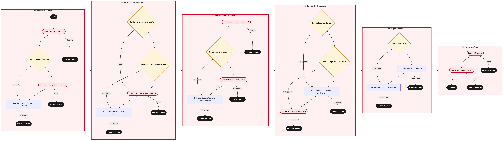

Updated 2026-08-21
Pre Employment Clearance and Security Vetting
Process flow
Click to zoom

Process steps
▼
Phase 1 — Initial Application Review
4 steps
| Step | Activity | Role | System | Input | Output | KPI | Dec | Exc | Pain point |
|---|---|---|---|---|---|---|---|---|---|
| 1.1 | Receive and log application | Talent Acquisition Specialist | PhenomB | Candidate's application form | Application logged in Phenom | Applications received per day | N | Y | Delayed submission due to system lag |
| 1.2 | Verify required documents | Talent Acquisition Specialist | PhenomB | Application form and attachments | Verification report | Documents verified per hour | Y | N | Missing critical documents |
| 1.3 | Schedule language proficiency test | Talent Acquisition Specialist | PhenomB | Verified application | Test scheduled | Tests scheduled per week | N | Y | No available slots in the next two weeks |
| 1.4 | Notify candidate of missing documents | Talent Acquisition Specialist | Microsoft 365C | Verification report | Notification email | Notifications sent per day | N | N | Candidate does not respond to notification |
▼
Phase 2 — Language Proficiency Assessment
4 steps
| Step | Activity | Role | System | Input | Output | KPI | Dec | Exc | Pain point |
|---|---|---|---|---|---|---|---|---|---|
| 2.1 | Conduct language proficiency test | Language Proficiency Tester | Microsoft 365C | Scheduled test | Test results | Tests completed per day | Y | N | Candidate fails the test on first attempt |
| 2.2 | Review language proficiency results | Talent Acquisition Specialist | PhenomB | Test results | Result review report | Results reviewed per hour | Y | N | Inconsistent scoring across tests |
| 2.3 | Reschedule language proficiency test | Talent Acquisition Specialist | PhenomB | Test results | New test scheduled | Reschedules per week | N | Y | No available slots in the next four weeks |
| 2.4 | Notify candidate of language proficiency failure | Talent Acquisition Specialist | Microsoft 365C | Review report | Notification email | Notifications sent per day | N | N | Candidate does not respond to notification |
▼
Phase 3 — Security Clearance Request
4 steps
| Step | Activity | Role | System | Input | Output | KPI | Dec | Exc | Pain point |
|---|---|---|---|---|---|---|---|---|---|
| 3.1 | Initiate security clearance request | Security Clearance Officer | SAP S/4HANAA | Candidate's verified information | Clearance request submitted | Requests submitted per day | N | Y | System downtime causing delays |
| 3.2 | Review security clearance status | Security Clearance Officer | SAP S/4HANAA | Clearance request status | Status report | Status checks per hour | Y | N | Candidate fails the clearance due to past criminal record |
| 3.3 | Escalate to supervisor for review | Security Clearance Officer | SAP S/4HANAA | Status report | Escalation request | Escalations per week | N | Y | Supervisor unavailability causing delays |
| 3.4 | Notify candidate of security clearance failure | Talent Acquisition Specialist | Microsoft 365C | Status report | Notification email | Notifications sent per day | N | N | Candidate does not respond to notification |
▼
Phase 4 — Background Check Processing
4 steps
| Step | Activity | Role | System | Input | Output | KPI | Dec | Exc | Pain point |
|---|---|---|---|---|---|---|---|---|---|
| 4.1 | Conduct background check | Background Check Specialist | SAP S/4HANAA | Candidate's verified information | Background check report | Checks conducted per day | Y | N | Inaccurate or incomplete data from previous employers |
| 4.2 | Review background check results | Talent Acquisition Specialist | PhenomB | Background check report | Result review report | Results reviewed per hour | Y | N | Discrepancies in provided information |
| 4.3 | Notify candidate of background check failure | Talent Acquisition Specialist | Microsoft 365C | Review report | Notification email | Notifications sent per day | N | N | Candidate does not respond to notification |
| 4.4 | Escalate to supervisor for review | Talent Acquisition Specialist | PhenomB | Review report | Escalation request | Escalations per week | N | Y | Supervisor unavailability causing delays |
▼
Phase 5 — Final Approval Decision
3 steps
| Step | Activity | Role | System | Input | Output | KPI | Dec | Exc | Pain point |
|---|---|---|---|---|---|---|---|---|---|
| 5.1 | Final approval review | HR Manager | PhenomB | All clearance and vetting results | Approval decision | Decisions made per day | Y | N | Conflicting information between different checks |
| 5.2 | Notify candidate of approval | Talent Acquisition Specialist | Microsoft 365C | Approval decision | Notification email | Notifications sent per day | N | N | Candidate does not respond to notification |
| 5.3 | Notify candidate of final rejection | Talent Acquisition Specialist | Microsoft 365C | Approval decision | Notification email | Notifications sent per day | N | N | Candidate does not respond to notification |
▼
Phase 6 — Post-Approval Actions
2 steps
| Step | Activity | Role | System | Input | Output | KPI | Dec | Exc | Pain point |
|---|---|---|---|---|---|---|---|---|---|
| 6.1 | Update HR records | HR Analyst | DayforceB | Approval decision | Updated HR record | Records updated per day | N | Y | System integration issues between Dayforce and SAP S/4HANA |
| 6.2 | Process any related expenses | HR Analyst | SAP S/4HANAA | Updated HR record | Expense processed | Expenses processed per day | N | Y | Incorrect expense coding causing delays |
Swim lanes
Talent Acquisition Specialist1.1 1.2 1.3 1.4 2.2 2.3 2.4 3.4 4.2 4.3 4.4 5.2 5.3
Language Proficiency Tester2.1
Security Clearance Officer3.1 3.2 3.3
Background Check Specialist4.1
HR Manager5.1
HR Analyst6.1 6.2
Systems touched
PhenomBMicrosoft 365CSAP S/4HANAADayforceB
Key performance indicators
- Applications received per day
- Documents verified per hour
- Tests scheduled per week
- Notifications sent per day
- Decisions made per day
Risks and control points
- Delays in language proficiency test scheduling due to system availability
- Inconsistent scoring results affecting candidate selection
- System downtime impacting security clearance requests
- Errors in background check data causing processing delays
- Conflicts in vetting results leading to incorrect approvals
Air Canada Process Wiki — process and systems reference compiled from public sources
for IT Application Management and User Support pre-sales discovery.
Built 2026-08-21. Every system carries an evidence tier: tier C is an industry pattern and tier U is an open
question, and neither should be asserted as fact about Air Canada without confirmation in discovery.
Not affiliated with or endorsed by Air Canada. Air Canada, Aeroplan and Altitude are trademarks of Air Canada.